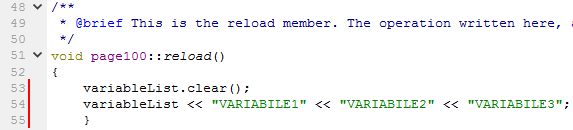

|
Campo |
Descrizione |
|
Priority |
Abilitazione allo scambio dati con dispositivi remoti. - 0: Non abilitato; - 1: Abilitato con priorità alta; - 2: Abilitato con priorità media; - 3: Abilitato con priorità bassa. |
|
Update |
Definisce la tipologia di scambio dati attivata con i dispositivi remoti. -H: la variabile viene aggiornata solo se visualizzata nella pagina corrente; *** -P: la variabile viene sempre aggiornata; -S: la variabile viene sempre aggiornata e storicizzata lentamente con un tempo “Slow Log Period” (parametro del System Editor); -F: come “S” ma velocemente e con un tempo “Fast Log Period” (parametro del System Editor); -V: la variabile è acquisita e storicizzata solo alla variazione; -X: la variabile è storicizzata quando viene richiamata dalla funzione logShot(). |
|
Name |
Nome della variabile. Non può avere più di 16 caratteri. |
|
Type |
Sono definiti i seguenti tipi: -BIT: booleano; -BYTE: byte; -BYTE_BIT: seleziona un BIT all’interno di un byte; -WORD_BIT: seleziona un BIT all’interno di una word (16bit); -DWORD_BIT: seleziona un BIT all’interno di una double word(32 bit); -UINT: intero senza segno a 16 bit; -UINTBA: intero senza segno a 16 bit con byte invertiti; -INT: intero con segno a 16 bit; -INTBA: intero con segno a 16 bit con byte invertiti; -UDINT: intero senza segno a 32 bit; -UDINT....: intero senza segno a 32 bit con byte invertiti; -DINT: intero con segno a 32 bit; -DINT....: intero con segno a 32 bit con byte invertiti; -REAL: reale; -REAL...: reale con byte invertiti. |
|
Decimal |
Per le variabili di tipo intero o reale indica il numero di decimali dopo la virgola con cui viene rappresentata la variabile. Nel caso in cui la variabile sia di tipo BYTE_BIT, WORD_BIT o DWORD_BIT indica la posizione del BIT a partire da 1. |
|
Protocol |
Indica il protocollo con cui viene scambiata la variabile: -PLC: variabile di interscambio tra PLC e HMI -RTU: variabile presente su un dispositivo remoto su Modbus RTU -TCP: variabile presente su un dispositivo remoto su Modbus TCP -TCPRTU: variabile presente su un dispositivo remoto su Modbus TCPRTU -CANOPEN: variabile presente su un dispositivo remoto CANopen -RTU_SRV: variabile che risponde ad una richiesta di un master Modbus RTU -TCP_SRV: variabile che risponde ad una richiesta di un master Modbus TCP -TCPRTU_SRV: variabile che risponde ad una richiesta di un master Modbus TCPRTU -MECT: variabile su protocollo MECT |
|
IP Address |
Indirizzo IP per modbus TCP e TCPRTU, ad esempio: 192.168.0.42 |
|
Port |
In caso di variabili NON PLC indica quale porta di comunicazione utilizzare: la porta di comunicazione dipende dal dispositivo utilizzato. |
|
Node ID |
Indirizzo del nodo del dispositivo remoto. Nel caso di indirizzo 0 la scrittura è di tipo Broadcast. |
|
Register |
Indirizzo Modbus del registro a cui fare accesso. |
|
Block |
Indirizzo del primo registro del blocco. Per registri facenti parte di un blocco la lettura viene richiesta accorpata. |
|
Comment |
Utilizzato come campo di commento per la variabile. Non viene utilizzato dal sistema. |
|
Behavior |
Definisce se la variabile è di tipo “lettura”, “lettura/scrittura”, “allarme” o “evento”. |
|
N. Reg |
Numero di registri presenti nel blocco, massimo 64 registri. |
*** Per utilizzare correttamente le variabili di tipo “H” occorre inserire il seguente codice nella funzione reload() della pagexxx.cpp.

Sostituire ad esempio la scritta “VARIABILE1” con la variabile che si vuole utilizzare. Nel caso di più variabili con lo stesso blocco è possibile inserire solamente la prima variabile.